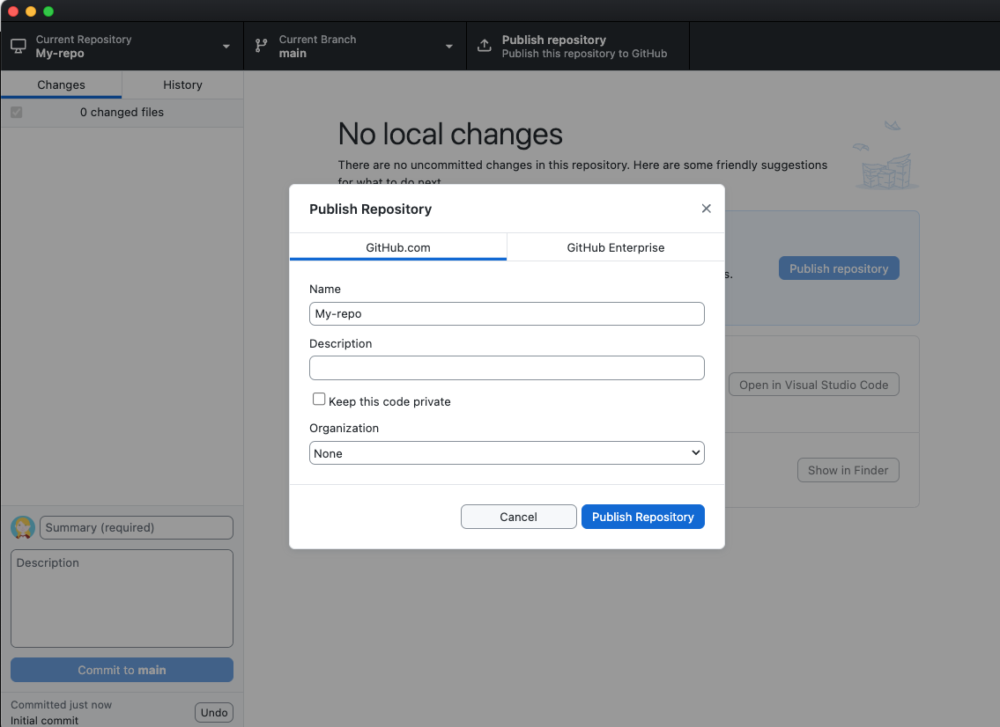

Git is used by developers to track and manage their code. Its main benefit is that it keeps track of file versions, meaning that if you update your the code in a file, you can still access previous versions if you need them.
It is also
very helpful for when multiple developers work together. Git has the ability to allow for different developers to work on different "branches" of code and can intelligently "merge" branches together. A coding project on Git is called a repository, or "repo".
GitHub is a software brand that manages Git repositories and makes it possible to host the code on the web. We will use Github to manage our Git repositories in this class.
It is possible to use Git via your computer's "command line interface", works by entering lines of commands for your computer to execute. But an easier and more intuitive way for us to do this is to use GitHub Desktop, a software app for your computer meant to act as an interface for using Git and uploading your code to Github
Accessing Git via the Command Line Interface requires you to know the exact commands to enter and does not offer visual feedbackGitHub Desktop makes Git a lot more intuitive. Github Desktop is an example of a GUI or Graphical User Interface
The opposite of a Graphical User Interface (GUI) is a Command Line Interface (CLI).
For the purposes of our class, make a folder on your computer where all of your repositories can live. When you create a Git repository, you are creating a physical folder location on your computer for the repository and all of the files within it to live. Be careful not to move this folder, as this will "break" the file path and the repository. Because of this, I recommend creating a dedicated folder to keep things organized. Creating a new folder is usually accessed by going to File > New Folder in either Finder or File Explorer depending on your operating system.
Now, open GitHub Desktop, and navigate to File > New Repository. Give your repository a descriptive name. Use dashes instead of spaces. In general it is a best practice to create file and folder names without spaces. Optionally, give your repository a description. For Local Path, make sure to choose the folder we created in Step 2 as the place where this repository will live.
You can leave the Git Ignore, License, and README settings untouched.
Click create repository. A new folder matching the name of your repository will be created. From now on, any changes or files added to this folder will be tracked by Git.
Saving changes to your repository
Any changes you make within your repository should be automatically tracked in GitHub desktop. If you open your repository, you should see a list of changed files along with a log of what has changed. To save these changes to Git, you need to "commit" them.
First, select what files you want to commit. (They will most likely all be selected by default, and you can keep it this way)
Next, enter a summary of your changes in the space next to your icon
Then, select "commit to main". "Main" refers to the current branch you are on, which by default is named "Main". For the purposes of our class we don't need to create multiple branches
Your changes are now "committed" to your local Git repository, but not yet published to GitHub.com. If you have already set up your repository on Github.com, click "Push Origin" and your code will be pushed live to GitHub.com. If you have not yet set up your repository on GitHub.com, follow the steps in the next section.
Publishing your code to GitHub.com and making it live
If you repository is not yet live on GitHub, you should see "Publish Repository" as an option in the top right after committing your code, click this.
Uncheck "Keep This Code Private" and click "Publish Repository.

At this point you will be prompted to log in to Github, do so.
Next, back in GitHub Desktop, click "View on Github" to see your repository on GitHub.com. If you don't see this option right away, you can go to Repository > View on GitHub from the GitHub desktop menu bar.
This will open Github.com on your browser. Navigate to settings and find "Pages" in the settings menu.
Under "branch" select "None" and change it to "Main", and click "save".
In a few minutes, your website will be live at [your-username].github.io/[your-repo-name]
Every time you push code it will update!
Note: If you get a 404 error when you load your website, it is because Github cannot find index.html. Did you name your homepage something different, or accidentally capitalize the I in index? If so, manually add the file to the end of your url, eg "https:/kerrin.github.io/Index.html"
Accessing your code for editing via GitHub Desktop
In order to make sure that the code you are editing in visual studio code is connected to your repository, I like to open the code from GitHub Desktop. An easy way to do this is to open GitHub desktop and from the menu bar go to Repository > Open in Visual Studio Code.
Using this menu you can also access other important locations, such as Repository > View on GitHub and Repository > Open in Finder/File Explorer. From here you can double click on an HTML file to open the code locally in your browser
How to get a link to your commit
Later in the semester I will ask you to show progress on your project by submitting a link to your latest Github commit.
After pushing your latest changes (see saving changes to your repository), navigate to history
Right click on the latest change and select "View on Github"
Copy the url of the commit that comes up and submit this